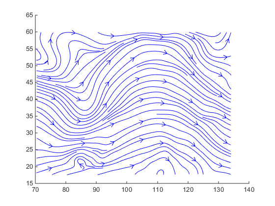
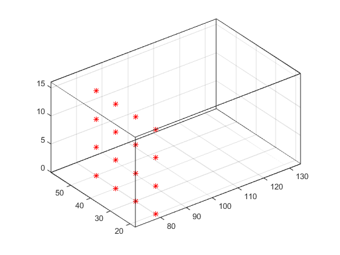
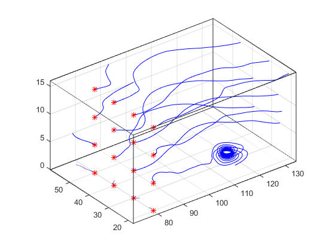

Visualizing Vector Volume Data
Lines, Particles, Ribbons, Streams, Tubes, and Cones
Vector volume data contains more information than scalar data because each coordinate point in the data set has three values associated with it. These values define a vector that represents both a magnitude and a direction. The velocity of fluid flow is an example of vector data.
A number of techniques are useful for visualizing vector data:
Stream lines trace the path that a massless particle immersed in the vector field would follow.
Stream particles are markers that trace stream lines and are useful for creating stream line animations.
Stream ribbons are similar to stream lines, except that the width of the ribbons enables them to indicate twist. Stream ribbons are useful to indicate curl angular velocity.
Stream tubes are similar to stream lines, but you can also control the width of the tube. Stream tubes are useful for displaying the divergence of a vector field.
Cone plots represent the magnitude and direction of the data at each point by displaying a conical arrowhead or an arrow.
It is typically the case that these functions best elucidate the data when used in conjunction with other visualization techniques, such as contours, slice planes, and isosurfaces. The examples in this section illustrate some of these techniques.
Using Scalar Techniques with Vector Data
Visualization techniques such as contour slices, slice planes, and isosurfaces
require scalar volume data. You can use these techniques with vector data by taking
the magnitude of the vectors. For example, the wind data set
returns three coordinate arrays and three vector component arrays,
u, v, w. In this case,
the magnitude of the velocity vectors equals the wind speed at each corresponding
coordinate point in the volume.
wind_speed = sqrt(u.^2 + v.^2 + w.^2);
The array wind_speed contains scalar values for the volume
data. The usefulness of the information produced by this approach, however, depends
on what physical phenomenon is represented by the magnitude of your vector
data.
Specifying Starting Points for Stream Plots
Stream plots (stream lines, ribbons, tubes, and cones or arrows) illustrate the
flow of a 3-D vector field. The MATLAB® stream-plotting functions (streamline, streamribbon, streamtube, coneplot, stream2, stream3) all require you to
specify the point at which you want to begin each stream trace.
Determining the Starting Points
Generally, knowledge of your data's characteristics helps you select the starting points. Information such as the primary direction of flow and the range of the data coordinates helps you decide where to evaluate the data.
The streamslice function is useful
for exploring your data. For example, these statements draw a slice through the
vector field at a z value midway in the range.
load wind zmax = max(z(:)); zmin = min(z(:)); streamslice(x,y,z,u,v,w,[],[],(zmax-zmin)/2)

This stream slice plot indicates that the flow is in the positive x-direction and also enables you to select starting points in both x and y. You could create similar plots that slice the volume in the x-z plane or the y-z plane to gain further insight into your data's range and orientation.
Specifying Arrays of Starting-Point Coordinates
To specify the starting point for one stream line, you need the
x-, y-, and
z-coordinates of the point. The meshgrid command provides a
convenient way to create arrays of starting points. For example, you could
select the following starting points from the wind data displayed in the
previous stream slice.
[sx,sy,sz] = meshgrid(80,20:10:50,0:5:15);
This statement defines the starting points as all lying on x = 80, y ranging
from 20 to 50, and z ranging from 0 to 15. You can use plot3 to display the
locations.
plot3(sx(:),sy(:),sz(:),'*r'); axis(volumebounds(x,y,z,u,v,w)) grid on set(gca,'BoxStyle','full','Box','on') daspect([2 2 1])

You do not need to use 3-D arrays, such as those returned by
meshgrid, but the size of each array must be the same,
and meshgrid provides a convenient way to generate arrays
when you do not have an equal number of unique values in each coordinate. You
can also define starting-point arrays as column vectors. For example,
meshgrid returns 3-D arrays:
[sx,sy,sz] = meshgrid(80,20:10:50,0:5:15); whos
Name Size Bytes Class Attributes sx 4x1x4 128 double sy 4x1x4 128 double sz 4x1x4 128 double
In addition, you could use 16-by-1 column vectors with the corresponding
elements of the three arrays composing the coordinates of each starting point.
(This is the equivalent of indexing the values returned by
meshgrid as sx(:),
sy(:), and sz(:).)
For example, adding the stream lines to the starting points produces:
streamline(x,y,z,u,v,w,sx(:),sy(:),sz(:))

Accessing Subregions of Volume Data
The subvolume function provides a
simple way to access subregions of a volume data set. subvolume
enables you to select regions of interest based on limits rather than using the
colon operator to index into the 3-D arrays that define volumes. Consider the
following two approaches to creating the data for a subvolume — indexing with
the colon operator and using subvolume.
Indexing with the Colon Operator
When you index the arrays, you work with values that specify the elements in each dimension of the array.
load wind xsub = x(1:10,20:30,1:7); ysub = y(1:10,20:30,1:7); zsub = z(1:10,20:30,1:7); usub = u(1:10,20:30,1:7); vsub = v(1:10,20:30,1:7); wsub = w(1:10,20:30,1:7);
Using the subvolume Function
subvolume enables you to use coordinate values that you can
read from the axes. For example:
lims = [100.64 116.67 17.25 28.75 -0.02 6.86]; [xsub,ysub,zsub,usub,vsub,wsub] = subvolume(x,y,z,u,v,w,lims);
You can then use the subvolume data as inputs to any function requiring vector volume data.